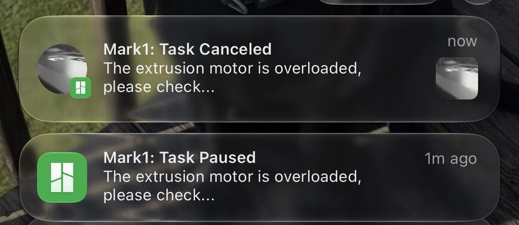

“The extrusion motor is overloaded”
One message. Three causes.
The printer feels how hard its motor has to push the filament, and pauses when that is too hard. The message is the same whatever is in the way. We have had three different things in the way.
Seen in recorded on Mark 1, three times · PET-GF on a left 0.4 mm, twice · white PETG on a right 0.2 mm, once

Filament left loaded and idle
A print paused before its first layer. The printer had sat for a while with filament in it.
What fixed it. Cut the filament at the spool. Unload at the touchscreen. Pull the whole cut piece out. Load the fresh end and resume. The print ran its 252 layers.
Derek had done this a few times by then. He suspects the length left in the feed path takes up moisture. Nothing has tested that.
A hotend that would not pass plastic
The print paused. Derek cleaned the outside of the hotend and resumed, and it paused again. His words for the message that day were “extruder motor overheating”.
What fixed it. Another hotend. He swapped in the spare, resumed, and the same job finished.
The hotend that came off has not been cold-pulled, so “clogged” is still a suspicion.
A nozzle too close to the plate
Four tries stopped on this message, at about the same spot in the first layer. Drying the spools twice, a spare hotend and rethreading the filament changed nothing.
What fixed it. Lifting the right-side nozzles {{h2c-idresult:/print_setup/right_z_trim_mm}} mm off the plate. The fifth try finished.
The PETG part tells this one in full.
Never push a clog from below.
In May 2026, during the first PET-CF faucet attempts, filament jammed in the feed gears above the right hotend of the only printer. A probe pushed up from below to free it snapped the pincers that grip that hotend and cut the heater’s flat cable.
On the evening of 4 May a replacement extruder was ordered, and an hour later a second printer. That printer is Mark2.
The way in, from the front
Take off the back fan.
Unplug the hotend’s flat cable.
Unscrew its power leads.
Only then undo its mounting screws.
Lift off the plate in front of the motors. The jam is there.
“Well, it broke the same way again.”
A fouled hotend can be the result of the trouble. On the fourth stop he asked for one change only, and it was the one that worked.
In the record
The idle-filament recovery · The swapped hotend · The lifted nozzle · The clog and the way in